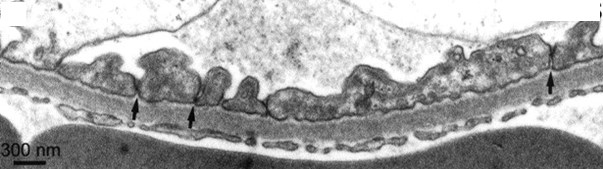

Vraag 1
Casus 1 (19 punten).
Een 40-jarige man van Surinaamse afkomst komt op het spreekuur bij de nefroloog met fors oedeem aan de benen en rond de ogen. Het laboratoriumonderzoek toont enig nierfunctieverlies en hypoalbuminemie. Het urinesediment laat behoudens 3+++ eiwit geen afwijkingen zien.
Een 40-jarige man van Surinaamse afkomst komt op het spreekuur bij de nefroloog met fors oedeem aan de benen en rond de ogen. Het laboratoriumonderzoek toont enig nierfunctieverlies en hypoalbuminemie. Het urinesediment laat behoudens 3+++ eiwit geen afwijkingen zien.
Wanneer spreekt men van proteïnurie in een 24 uurs urineverzameling?
Modelantwoord
Bij meer dan 300 mg albumine in 24 uurs urine.
Vraag 2
Casus 2 (19 punten).
Een 68-jarige Poolse man komt op de Spoedeisende Hulp met dyspnoe en hoesten. Hij heeft geen koorts. Uit het aanvullend onderzoek blijkt dat er sprake is van een hoog CRP, nierinsufficiëntie en een actief urinesediment. De patiënt wordt ervan verdacht een acute glomerulonefritis te hebben.
Een 68-jarige Poolse man komt op de Spoedeisende Hulp met dyspnoe en hoesten. Hij heeft geen koorts. Uit het aanvullend onderzoek blijkt dat er sprake is van een hoog CRP, nierinsufficiëntie en een actief urinesediment. De patiënt wordt ervan verdacht een acute glomerulonefritis te hebben.
Welke twee aandoeningen geven het beeld van een glomerulonefritis met betrokkenheid van de longen?
Modelantwoord
ANCA-vasculitis (1 punt), Anti-GBM-nefritis (1 punt).
Vraag 3
Vervolg casus 3. Bij het lichamelijk onderzoek zijn er naast de hypertensie geen andere afwijkingen en de nierfunctiestoornis valt gelukkig mee. Patiënt krijgt het advies om zoutarm te gaan eten en er wordt een ACE-remmer gestart. Echter patiënt wil geen medicatie en zeker het zoutarme dieet niet. Het zou niet in zijn levensstijl passen. Hij heeft een goede functie in een groot farmaceutisch concern, eet regelmatig met klanten en collega’s buiten de deur en heeft het vooruitzicht over enkele jaren in het bestuur te komen. Hij wil niet dat zijn collega’s weten dat hij ziek is!
Beschrijf kort wat autonomie als positieve vrijheid inhoudt.
Modelantwoord
Autonomie als positieve vrijheid (vrijheid tot) houdt in dat beslissingen alleen autonoom zijn als ze in overeenstemming zijn met de fundamentele waarden van de persoon die de beslissing neemt. Centraal staat zelfontplooiing, je leven vormgeven. In tegenstelling tot autonomie als negatieve vrijheid is de inhoud van de keuze bij autonomie als positieve vrijheid wél relevant.
Vraag 4
(a) Noem het belangrijkste lichamelijk onderzoek in het kader van de screening voor nierdonatie (1 item).
(b) Noem de 2 meest voor de hand liggende algemene bloedwaardes en één belangrijke urinetest die de huisarts al in kan zetten om in te schatten of de donor gezond genoeg is voor nierdonatie.
(b) Noem de 2 meest voor de hand liggende algemene bloedwaardes en één belangrijke urinetest die de huisarts al in kan zetten om in te schatten of de donor gezond genoeg is voor nierdonatie.
Modelantwoord
(a) Bloeddruk (1 punt).
(b) Kreatinine en glucose; eiwit/proteïnurie (2 punten).
Vraag 5
Noem 2 klinische criteria (geen laboratoriumonderzoek) om de diagnose SLE te kunnen stellen.
Modelantwoord
Huidafwijkingen (o.a. vlinderexantheem), orale ulcera, zonlichtovergevoeligheid, artritis, pleuro-/pericarditis, neurologische afwijkingen (insult, psychose).
Vraag 6
Welke afwijking kan je bij lichamelijk onderzoek zien bij een patiënt met een nefrotisch syndroom en hoe ontstaat dit?
Modelantwoord
Oedeem (1 punt), door natriumretentie in de tubuli, door de activering van het epitheliale natriumkanaal door de proteïnurie (2 punten).
Vraag 7
Casus 4
Een 78 jarige man wordt gezien op de eerste hulp met hemoptoë (bloed ophoesten). Bij laboratoriumonderzoek blijkt een ernstige nierinsufficiëntie. Als de man de kamer verlaat zeggen de dochters tegen de arts: "Als er iets ernstigs aan de hand is dan moet u dat niet tegen onze vader zeggen. Hij heeft altijd gezegd dat als hij iets ernstigs gaat mankeren hij er een einde aan maakt."
Een 78 jarige man wordt gezien op de eerste hulp met hemoptoë (bloed ophoesten). Bij laboratoriumonderzoek blijkt een ernstige nierinsufficiëntie. Als de man de kamer verlaat zeggen de dochters tegen de arts: "Als er iets ernstigs aan de hand is dan moet u dat niet tegen onze vader zeggen. Hij heeft altijd gezegd dat als hij iets ernstigs gaat mankeren hij er een einde aan maakt."
Je denkt aan een auto-immuunziekte als oorzaak van de nier- en longproblemen. Welke 2 mogelijke diagnoses zijn er dan?
Modelantwoord
(1) De ziekte van Goodpasture / anti-GBM-ziekte.
(2) Een ANCA-geassocieerde vasculitis.
Vraag 8
Welke 2 serologische tests zet je in ieder geval direct in?
Modelantwoord
(1) Een anti-GBM-bepaling.
(2) Een ANCA-bepaling.
Vraag 9
Voor alle zekerheid wil je een postrenale oorzaak van de nierinsufficiëntie uitsluiten. Welk onderzoek vraag je aan?
Modelantwoord
Een echo-onderzoek van de urinewegen (nieren en blaas).
Vraag 10
Casus 5 (2 punten).
De DM type 1 van een patiënt is ernstig ontregeld met hyperglycemie en keto-acidose. Bij lichamelijk onderzoek valt onder andere op: droge slijmvliezen en een lage turgor.
De DM type 1 van een patiënt is ernstig ontregeld met hyperglycemie en keto-acidose. Bij lichamelijk onderzoek valt onder andere op: droge slijmvliezen en een lage turgor.
Zou het ADH laag of hoog zijn? En is de plasmaosmolaliteit hoog of laag? Licht toe. (1 per goed antwoord + toelichting.)
Modelantwoord
Het ADH is hoog: er is hypovolemie (droge slijmvliezen, lage turgor etc.). Dit komt door osmotische diurese, wat een prikkel is voor de afgifte van ADH.
Er is een hoge plasma-osmolariteit, o.a. door watertekort en hyperglycemie.
Vraag 11
In afwachting van de uitslagen van aanvullend bloedonderzoek en het nierbiopt dat gedaan is, wil je vast starten met een hoge dosis prednison. Patiënt heeft echter veel last van bijwerkingen gehad (gewichtstoename; hoge bloedglucose) bij eerder gebruik van prednison en wil dit absoluut niet. Hij zegt: "bedankt hoor dokter maar de 'hindoe-priester' heeft me aangeraden het met Ayurvedische behandeling te proberen".
Noem drie mogelijke redenen waarom de arts nooit met de patiënt over Ayurvedische behandeling heeft gesproken.
Modelantwoord
- Artsen vragen er niet naar door gebrek aan kennis/training: artsen zijn niet op de hoogte van religieuze of spirituele gebruiken, rituelen, waarden en normen (bijv. van bepaalde groepen), en zijn niet altijd 'spiritueel sensitief' of kunnen zich niet altijd inleven in het perspectief (de geestelijke/spirituele en emotionele belevingskant) van de patiënt.
- Artsen vragen er niet naar door gebrek aan tijd.
- Artsen vinden dat religie/spiritualiteit niet van invloed is op de gezondheid van de patiënt / de gezondheidsuitkomsten niet kan veranderen (er is geen wetenschappelijk bewijs) en vinden het daarom niet altijd belangrijk om er aandacht aan te besteden.
- Persoonlijke eigenschappen en ideeën van de arts: artsen vinden het alleen juist om religieuze of spirituele onderwerpen te bespreken als de patiënt er zelf over begint, vinden het ongepast om ernaar te vragen, of vinden het ongemakkelijk om over religie/spiritualiteit te praten.
Vraag 12
Casus 3 (6 punten).
Een man van 68 jaar wordt op de polikliniek gezien door de nefroloog. Hij is nu 3 jaar aan dialyse (basislijden: diabetische nefropathie) en wil in aanmerking komen voor een niertransplantatie. Er zijn al verschillende onderzoeken verricht, waaronder een X-thorax. Bij dit onderzoek wordt veel kalk gezien in de aorta.
Een man van 68 jaar wordt op de polikliniek gezien door de nefroloog. Hij is nu 3 jaar aan dialyse (basislijden: diabetische nefropathie) en wil in aanmerking komen voor een niertransplantatie. Er zijn al verschillende onderzoeken verricht, waaronder een X-thorax. Bij dit onderzoek wordt veel kalk gezien in de aorta.
Waarom is er bij patiënten met ernstige nierschade (los van alle andere risicofactoren) sprake van versnelde atherosclerose? Beschrijf het mechanisme in vijf stappen.
Modelantwoord
(1) Beschadigde nieren produceren te weinig 1-alfa-hydroxylase, waardoor (2) een tekort aan actief vitamine D, waardoor (3) te weinig calciumopname in de darm, waardoor (4) neiging tot hypocalciëmie en PTH-afgifte door de bijschildklier met vrijmaken van calcium en fosfaat uit het bot, waardoor (5) neerslagen van calcium/fosfaat in de vaatwand.
Vraag 13
Als je erover nadenkt waar de donornier geplaatst wordt in het lichaam, welk onderzoek moet worden verricht om na te gaan of transplantatie bij deze patiënt mogelijk is met de gegevens die je hebt gekregen in de casus?
Modelantwoord
Een echo (duplex) of CT-scan van de iliacale arteriën om na te gaan of deze vaten niet te veel verkalkt zijn om de nierarterie op aan te sluiten.
Vraag 14
Welk laboratoriumonderzoek (twee bepalingen) laat je verrichten?
Modelantwoord
TSH, FT4, eventueel schildklierstimulerende antistoffen (TSI).
Vraag 15
Casus Man 52 jaar (3 vragen, totaal 7 punten).
Een man van 52 jaar komt met malaiseklachten naar de polikliniek interne geneeskunde. Bij laboratoriumonderzoek blijkt er sprake te zijn van nierinsufficiëntie (eGFR 25 ml/min*1,73m²). De uitslagen van het urinesediment kunnen passen bij glomerulonefritis als oorzaak van nierfalen.
Een man van 52 jaar komt met malaiseklachten naar de polikliniek interne geneeskunde. Bij laboratoriumonderzoek blijkt er sprake te zijn van nierinsufficiëntie (eGFR 25 ml/min*1,73m²). De uitslagen van het urinesediment kunnen passen bij glomerulonefritis als oorzaak van nierfalen.
Welke twee afwijkingen zie je bij urineonderzoek?
Modelantwoord
Dysmorfe erytrocyten / erytrocytencilinders + eiwit (2 punten als beide genoemd worden).
Vraag 16
Vervolg casus Man 52 jaar.
Welk aanvullend onderzoek dient nu als eerste keuze te worden ingesteld om aannemelijk te maken dat het om acute nierinsufficiëntie gaat en niet een chronische/langer bestaande vorm? Noem één onderzoek dat het beste differentieert.
Modelantwoord
Echo nieren om de niergrootte te beoordelen (2 punten).
Verhoogd fosfaat en/of verlaagd calcium in het bloed wordt ook goed gerekend (bron: COO nefrologie).
Vraag 17
Casus Man 28 jaar (4 vragen, totaal 8 punten).
Een man van 28 jaar wordt na een sportkeuring doorverwezen naar de nefroloog. Er is een verdenking op IgA-nefropathie. De nierfunctie is goed (eGFR >90 ml/min*1,73m²).
Een man van 28 jaar wordt na een sportkeuring doorverwezen naar de nefroloog. Er is een verdenking op IgA-nefropathie. De nierfunctie is goed (eGFR >90 ml/min*1,73m²).
Wat is er in deze casus meest waarschijnlijk vastgesteld bij de keuring waardoor deze man is doorverwezen naar de nefroloog? Noem twee afwijkingen bij laboratoriumonderzoek.
Modelantwoord
Eiwit en bloed in de urine (2 punten als beide genoemd worden).
Vraag 18
Vervolg casus Nefrotisch syndroom.
Welk aanvullend onderzoek doe je op basis van de informatie uit de casus om de oorzaak van de membraneuze glomerulopathie vast te stellen?
Modelantwoord
X-thorax om longkanker uit te sluiten.
2 punten.
Vraag 19
Vervolg casus Chronische nierschade.
Welk aanvullend onderzoek dient nu te worden gedaan naast een ECG? Noem drie items.
Modelantwoord
Lab met ureum; d-dimeer; x-thorax; CT-angio van de thorax; echo-abdomen; levertesten; lipase.
1 punt per goed item, max 3 punten.
Vraag 20
Casus ADPKD (4 vragen, 4 punten in totaal)
Een patiënte van 37 jaar komt op de poli vanwege hematurie. De huisarts had een echografie van de nieren verricht en die toonde beiderzijds circa 10 cysten, verschillend in grootte. Zij wordt al 8 jaar behandeld voor hypertensie met lisinopril. Zij is verder bekend met overgewicht, galblaaspoliepen en een ovariumcyste. Haar nierfunctie, ook gemeten door de huisarts is normaal, en er is ongeveer 1 gram proteïnurie per dag in de urine. Haar moeder onderging op 40-jarige leeftijd een niertransplantatie vanwege autosomaal dominante polycysteuze nierziekte (ADPKD).
Een patiënte van 37 jaar komt op de poli vanwege hematurie. De huisarts had een echografie van de nieren verricht en die toonde beiderzijds circa 10 cysten, verschillend in grootte. Zij wordt al 8 jaar behandeld voor hypertensie met lisinopril. Zij is verder bekend met overgewicht, galblaaspoliepen en een ovariumcyste. Haar nierfunctie, ook gemeten door de huisarts is normaal, en er is ongeveer 1 gram proteïnurie per dag in de urine. Haar moeder onderging op 40-jarige leeftijd een niertransplantatie vanwege autosomaal dominante polycysteuze nierziekte (ADPKD).
De leeftijd waarop niercystevorming bij ADPKD, zelfs bij mutaties in hetzelfde gen, ontstaat kan behoorlijk verschillen. Wat is daarvoor de meest waarschijnlijke verklaring?
Vraag 21
Casus Malaiseklachten (4 vragen, 6 punten in totaal)
Een 65-jarige vrouw komt op de Eerste Hulp met malaiseklachten. Bij het bloedonderzoek worden de volgende waarden verkregen:
kreatinine 637 µmol/L (75-110 µmol/L)
kalium 7.1 mmol/L (3.6-4.8 mmol/L)
HCO3- 14 mmol/L (20-24 mmol/L)
fosfaat 3.0 mmol/L (1.2 – 1.6 mmol/L)
glucose 6.5 mmol/L (4 – 10.2 mmol/L)
Een 65-jarige vrouw komt op de Eerste Hulp met malaiseklachten. Bij het bloedonderzoek worden de volgende waarden verkregen:
kreatinine 637 µmol/L (75-110 µmol/L)
kalium 7.1 mmol/L (3.6-4.8 mmol/L)
HCO3- 14 mmol/L (20-24 mmol/L)
fosfaat 3.0 mmol/L (1.2 – 1.6 mmol/L)
glucose 6.5 mmol/L (4 – 10.2 mmol/L)
Wat is nu de eerste stap van de behandelend arts?
Vraag 22
Vervolg van de casus. De behandelend arts van de Eerste Hulp doet urine-onderzoek, laat een X-Thorax, een ECG en een echo van de nieren maken.
Welke twee afwijkingen worden er op het ECG nu het meest waarschijnlijk gezien?
Modelantwoord
Breed QRS complex (1 punt)
AV-block of Ventriculair Escape Ritme (1 punt)
Vraag 23
Casus De heer A. P. (4 vragen, totaal 4 punten)
De heer A. P. wordt verwezen door de huisarts naar uw spreekuur. Hij heeft sinds 2 weken in toenemende mate last van dikke benen. Sinds gisteren was ook zijn gezicht opgezet bij het opstaan. Hij heeft een blanco voorgeschiedenis. De huisarts liet bloed prikken, en het laboratorium rapporteerde:
Kreatinine 103 μmol/L [n 64-104 μmol/L]
Albumine 21 g/L [n 32-52 g/L]
Hemoglobine 9,5 mmol/L [n 8,5-11,0 mmol/L]
Cholesterol 8,7 mmol/L [<5 mmol/L]
De heer A. P. wordt verwezen door de huisarts naar uw spreekuur. Hij heeft sinds 2 weken in toenemende mate last van dikke benen. Sinds gisteren was ook zijn gezicht opgezet bij het opstaan. Hij heeft een blanco voorgeschiedenis. De huisarts liet bloed prikken, en het laboratorium rapporteerde:
Kreatinine 103 μmol/L [n 64-104 μmol/L]
Albumine 21 g/L [n 32-52 g/L]
Hemoglobine 9,5 mmol/L [n 8,5-11,0 mmol/L]
Cholesterol 8,7 mmol/L [<5 mmol/L]
De huisarts denkt dat er sprake zou kunnen zijn van een nefrotisch syndroom. Welk kenmerk is er, naast de in de casus genoemde kenmerken, nog meer nodig om dit vast te stellen?
Vraag 24
De huisarts begint vast met conservatieve behandeling, in afwachting van verdere diagnostiek. Deze behandeling bestaat uit
Vraag 25
Casus Cholera (1 vraag, 1 punt)
In een vluchtelingenopvang in Jemen heerst cholera. Een van de patiënten verliest wel 15 liter diarree per dag. Zijn ogen zijn ingezonken, hij reageert traag, zijn slijmvliezen zijn droog. Zijn bloeddruk is 100/80 mmHg met een hartfrequentie van 105/min.
In een vluchtelingenopvang in Jemen heerst cholera. Een van de patiënten verliest wel 15 liter diarree per dag. Zijn ogen zijn ingezonken, hij reageert traag, zijn slijmvliezen zijn droog. Zijn bloeddruk is 100/80 mmHg met een hartfrequentie van 105/min.
Wat is nu de verwachting van de zout- en waterhuishouding zoals te onderzoeken in de urine?
Vraag 26
Casus Nierdonatie (2 vragen, 5 punten in totaal)
Een 25-jarige man ondergaat hemodialyse bij een onbegrepen nierinsufficiëntie. Zijn moeder wil een nier doneren en er wordt onderzocht of er een match is.
Een 25-jarige man ondergaat hemodialyse bij een onbegrepen nierinsufficiëntie. Zijn moeder wil een nier doneren en er wordt onderzocht of er een match is.
Wat is de belangrijkste test om te bepalen of er een geschikte match is?
Modelantwoord
Kruisproef (moet negatief zijn). Compatibele bloedgroep wordt ook goed gerekend.
Ook goed gerekend: kruisproef of bloedgroep onderzoek.
Identieke bloedgroep = fout.
Vraag 27
Casus Dubbelzien (3 vragen, 5 punten in totaal)
Een 48-jarige man is 15 kg afgevallen in ruim een half jaar tijd. Hij gaat nu toch eindelijk eens naar de dokter. Zijn uitgangsgewicht was 75 kg. Naast het gewichtsverlies ziet hij ook dubbel, heeft hij wat oedeem bij zijn scheenbenen opgemerkt, en klopt zijn hart opvallend snel. U meet bij het lichaamsonderzoek een temperatuur van 38,4 graden Celsius.
Een 48-jarige man is 15 kg afgevallen in ruim een half jaar tijd. Hij gaat nu toch eindelijk eens naar de dokter. Zijn uitgangsgewicht was 75 kg. Naast het gewichtsverlies ziet hij ook dubbel, heeft hij wat oedeem bij zijn scheenbenen opgemerkt, en klopt zijn hart opvallend snel. U meet bij het lichaamsonderzoek een temperatuur van 38,4 graden Celsius.
Wat is de meest waarschijnlijke diagnose?
Modelantwoord
Thyreotoxicose, specifieker M. Graves (gezien dubbelzien), hyperthyreoïdie
Vraag 28
Vervolg casus malaiseklachten.
U doet bloed- en urineonderzoek: het plasmakreatininegehalte is 1024 µmol/L (ref 75-110 µmol/L), en in het urinesediment zijn veel dismorfe erythrocyten zichtbaar.
U doet bloed- en urineonderzoek: het plasmakreatininegehalte is 1024 µmol/L (ref 75-110 µmol/L), en in het urinesediment zijn veel dismorfe erythrocyten zichtbaar.
Welke aanvullende laboratoriumtesten die licht kunnen werpen op de oorzaak van deze aandoening wilt u nog aanvragen? Noem er vier.
Modelantwoord
ANCA (1 punt)
Anti-GBM antistoffen (1 punt)
Anti-dsDNA of ENA (SLE antistoffen) (1 punt)
Anti-streptolysine titer en/of anti-DNAse B (1 punt)
Maximaal 4 punten.
Vraag 29
Vervolg casus malaiseklachten.
Na een week komt deze 45-jarige man op het spreekuur van de internist-nefroloog. Er wordt opnieuw bloedonderzoek gedaan. Kreatinine 1267 µmol/L (75-110 µmol/L), kalium 6.5 mmol/L (3.6-4.8 mmol/L), fosfaat 3.0 mmol/L (1.2 – 1.6 mmol/L), glucose 6.5 mmol/L (4 – 10.2 mmol/L).
Na een week komt deze 45-jarige man op het spreekuur van de internist-nefroloog. Er wordt opnieuw bloedonderzoek gedaan. Kreatinine 1267 µmol/L (75-110 µmol/L), kalium 6.5 mmol/L (3.6-4.8 mmol/L), fosfaat 3.0 mmol/L (1.2 – 1.6 mmol/L), glucose 6.5 mmol/L (4 – 10.2 mmol/L).
U vraagt een ECG: welke afwijkingen verwacht u te zien?
Vraag 30
Welk laboratoriumonderzoek zou nog een ander aanknopingspunt voor de behandeling van de hyperkaliëmie kunnen opleveren?
Modelantwoord
pH of HCO3 (bicarbonaat) of BE (1 punt): als de pH of HCO3 laag zijn of BE negatief, is er acidose. Acidose leidt tot hyperkaliëmie; correctie van acidose corrigeert mede de hyperkaliëmie.
Maximaal 1 punt.
Vraag 31
Casus oedeem aan de benen (4 vragen, 8 punten in totaal).
Een 28-jarige man presenteert zich op de poli met sinds 3 weken bestaand oedeem aan de benen. Hij heeft een blanco voorgeschiedenis en gebruikt geen medicatie. Ook de anamnese levert geen aanknopingspunten op. Bij lichamelijk onderzoek heeft hij een bloeddruk van 130/80 mmHg, pols van 80/min. Extremiteiten: pitting oedeem tot halverwege de bovenbenen. Laboratoriumonderzoek toont hemoglobine 9 mmol/l (8.5-11), kreatinine van 80 µmol/l (60-110), albumine 17 g/l (35-45), totaal cholesterol 9 mmol/l (<6.5). 24-uurs urine toont kreatinine 15 mmol, totaal eiwit 25 gram (<0.3). Urinesediment is schoon. Een echo van de nieren toont nieren van 11 cm. Een nierbiopsie wordt verricht. Bij lichtmicroscopie en immunofluorescentie worden geen afwijkingen gezien. Elektronenmicroscopie: zie afbeelding.
Gezien deze bevindingen geef je dieetadviezen en start je met diuretica en prednisolon. Bij de poliklinische controle 2 weken later vind je nog een spoor oedeem aan de benen. Laboratoriumonderzoek toont een albumine van 30 g/l; 24-uurs urine toont kreatinine 23 mmol, totaal eiwit 0.5 gram. Ondanks de goede reactie op prednison, zul je patiënt moeten informeren dat het ziektebeeld zich kenmerkt door frequente recidieven.
Een 28-jarige man presenteert zich op de poli met sinds 3 weken bestaand oedeem aan de benen. Hij heeft een blanco voorgeschiedenis en gebruikt geen medicatie. Ook de anamnese levert geen aanknopingspunten op. Bij lichamelijk onderzoek heeft hij een bloeddruk van 130/80 mmHg, pols van 80/min. Extremiteiten: pitting oedeem tot halverwege de bovenbenen. Laboratoriumonderzoek toont hemoglobine 9 mmol/l (8.5-11), kreatinine van 80 µmol/l (60-110), albumine 17 g/l (35-45), totaal cholesterol 9 mmol/l (<6.5). 24-uurs urine toont kreatinine 15 mmol, totaal eiwit 25 gram (<0.3). Urinesediment is schoon. Een echo van de nieren toont nieren van 11 cm. Een nierbiopsie wordt verricht. Bij lichtmicroscopie en immunofluorescentie worden geen afwijkingen gezien. Elektronenmicroscopie: zie afbeelding.
Gezien deze bevindingen geef je dieetadviezen en start je met diuretica en prednisolon. Bij de poliklinische controle 2 weken later vind je nog een spoor oedeem aan de benen. Laboratoriumonderzoek toont een albumine van 30 g/l; 24-uurs urine toont kreatinine 23 mmol, totaal eiwit 0.5 gram. Ondanks de goede reactie op prednison, zul je patiënt moeten informeren dat het ziektebeeld zich kenmerkt door frequente recidieven.
Noem de drie kernsymptomen van het nefrotisch syndroom.

Modelantwoord
Hypo-albuminemie (1 punt), oedeem (1 punt), proteïnurie (1 punt), hypercholesterolemie/hyperlipidemie (1 punt).
Maximaal 3 punten.
Vraag 32
Vervolg casus 1.
De internist-nefroloog stelt uiteindelijk niet direct een behandeling in, maar wacht even af. Drie weken later komt de patiënt bij hem terug met het verhaal dat hij denkt meer klachten van de GPA te hebben gekregen. Bij lichamelijk onderzoek is het gewicht stabiel, de temperatuur 37,1 °C.
De internist-nefroloog stelt uiteindelijk niet direct een behandeling in, maar wacht even af. Drie weken later komt de patiënt bij hem terug met het verhaal dat hij denkt meer klachten van de GPA te hebben gekregen. Bij lichamelijk onderzoek is het gewicht stabiel, de temperatuur 37,1 °C.
Noem zes klachten uit zes verschillende orgaansystemen die deze patiënt aan de internist-nefroloog in een niet-medisch jargon zou kunnen vertellen en die ook door de GPA veroorzaakt kunnen worden.
Modelantwoord
• Bewegingsapparaat: spierpijn, gewrichtspijn, gewrichtsontsteking.
• Ogen: pijnlijke ogen.
• Huid: (rode) vlekken op de huid.
• KNO: korsten in de neus, neusbloedingen.
• Longen: kortademigheid, bloed ophoesten.
• Hart: pijn op de borst.
• Zenuwen: tintelingen, uitval gevoel, bewegingsuitval (klapvoet).
(0,5 punt per goede klacht per orgaansysteem.)
Vraag 33
Bij deze patiënt moet snel diagnostiek worden gedaan en behandelingen worden ingesteld. Welke twee diagnostische of therapeutische handelingen doe je als eerste?
Modelantwoord
• Ca-gluconaat toedienen (1 punt).
• Insuline en glucose intraveneus toedienen (1 punt).
Deze patiënt wordt het meest bedreigd door de hyperkaliëmie (fatale hartritmestoornissen). Ca-gluconaat geeft snelle, kortdurende bescherming; insuline + glucose drijft kalium de cellen in voor iets langer durende bescherming.
Vraag 34
Vervolg casus 4.
De behandelend arts van de Eerste Hulp doet urine-onderzoek en laat een X-Thorax, een ECG en een echo van de nieren maken.
De behandelend arts van de Eerste Hulp doet urine-onderzoek en laat een X-Thorax, een ECG en een echo van de nieren maken.
Wat wordt er op het ECG gezien?
Modelantwoord
• Breed QRS-complex.
• AV-block of ventriculair escaperitme.
Vraag 35
Casus nefrotisch syndroom (7 vragen, 18 punten).
Een Afghaanse man van 81 jaar komt op de polikliniek nefrologie vanwege een nefrotisch syndroom. Hij gebruikt antistolling, dus een nierbiopt kan de nefroloog nu niet direct laten verrichten. De nefroloog doet eerst aanvullend onderzoek, waaronder een x-thorax.
Een Afghaanse man van 81 jaar komt op de polikliniek nefrologie vanwege een nefrotisch syndroom. Hij gebruikt antistolling, dus een nierbiopt kan de nefroloog nu niet direct laten verrichten. De nefroloog doet eerst aanvullend onderzoek, waaronder een x-thorax.
Noem de drie belangrijkste kenmerken van een nefrotisch syndroom.
Modelantwoord
(3 punten, alle kenmerken moeten worden genoemd)
- Oedeem
- Hypoalbuminemie
- Proteïnurie >3,5 gram/dag
Vraag 36
Casus dyspnoe en hoesten (6 vragen, 15 punten).
Een 68-jarige Poolse man komt op de Spoedeisende Hulp met dyspnoe en hoesten. Hij heeft geen koorts. Uit het aanvullend onderzoek blijkt dat er sprake is van een hoog CRP, nierinsufficiëntie en een actief urinesediment. De patiënt wordt ervan verdacht een acute glomerulonefritis te hebben.
Een 68-jarige Poolse man komt op de Spoedeisende Hulp met dyspnoe en hoesten. Hij heeft geen koorts. Uit het aanvullend onderzoek blijkt dat er sprake is van een hoog CRP, nierinsufficiëntie en een actief urinesediment. De patiënt wordt ervan verdacht een acute glomerulonefritis te hebben.
Welke twee aandoeningen geven het beeld van een glomerulonefritis met betrokkenheid van de longen?
Modelantwoord
ANCA-vasculitis (1 punt), Anti-GBM-nefritis (1 punt).
Vraag 37
Vervolg van de casus.
Bij het lichamelijk onderzoek zijn er naast de hypertensie geen andere afwijkingen en de nierfunctiestoornis valt gelukkig mee. Patiënt krijgt het advies om zoutarm te gaan eten en er wordt een ACE-remmer gestart. Echter patiënt wil geen medicatie en zeker het zoutarme dieet niet. Het zou niet in zijn levensstijl passen. Hij is alleenstaand, heeft een drukke baan en heeft vooruitzicht op een voor hem belangrijke promotie. Hij houdt niet van zelf koken, dat kost veel te veel tijd. Om die reden gaat hij iedere avond uit eten of hij laat thuis wat bezorgen. "Zoutarm eten heb ik echt geen tijd voor" zegt hij tegen de arts.
Bij het lichamelijk onderzoek zijn er naast de hypertensie geen andere afwijkingen en de nierfunctiestoornis valt gelukkig mee. Patiënt krijgt het advies om zoutarm te gaan eten en er wordt een ACE-remmer gestart. Echter patiënt wil geen medicatie en zeker het zoutarme dieet niet. Het zou niet in zijn levensstijl passen. Hij is alleenstaand, heeft een drukke baan en heeft vooruitzicht op een voor hem belangrijke promotie. Hij houdt niet van zelf koken, dat kost veel te veel tijd. Om die reden gaat hij iedere avond uit eten of hij laat thuis wat bezorgen. "Zoutarm eten heb ik echt geen tijd voor" zegt hij tegen de arts.
Beschrijf wat autonomie als positieve vrijheid inhoudt.
Modelantwoord
Autonomie als positieve vrijheid (vrijheid tot) houdt in dat beslissingen alleen autonoom zijn als ze in overeenstemming zijn met de fundamentele waarden van de persoon die de beslissing neemt. Centraal staat zelfontplooiing, je leven vormgeven. In tegenstelling tot autonomie als negatieve vrijheid is de inhoud van de keuze bij autonomie als positieve vrijheid wel relevant.